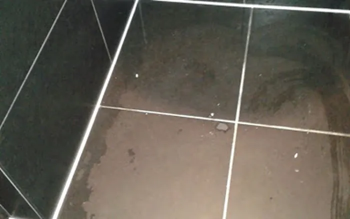
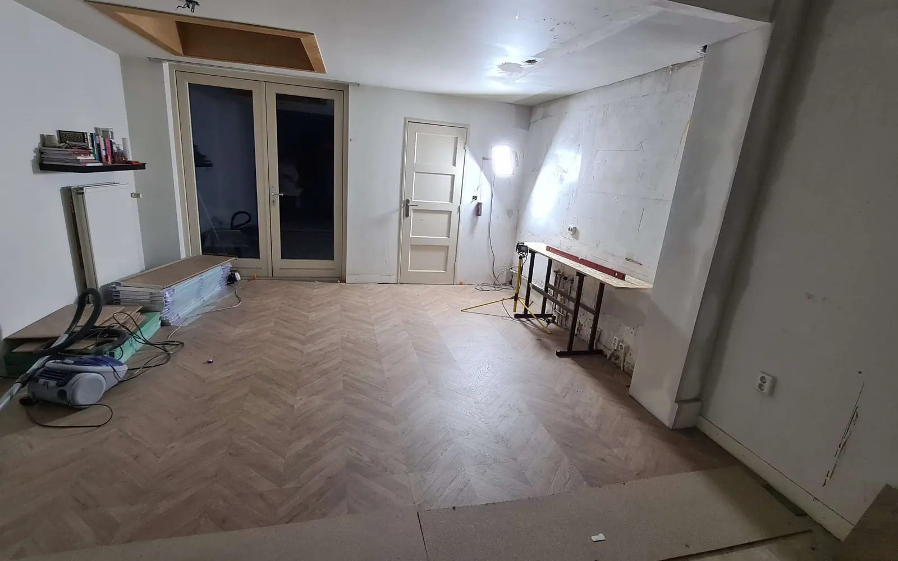
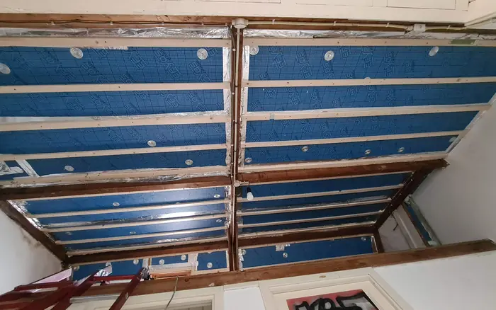

Binnen afwerken
Schilderen en behangen, vloeren en plinten, kitten en lekkages, ophangen en monteren.

Schilderen · Kitten · Vloeren · Badkamer · Zolder · Tuin en vijver
Van een kitrand tot een complete zolder: één vakman voor alles wat er in en rond uw huis moet gebeuren.
Liever bellen? 06 14841515, ma t/m vr 09:00 tot 17:00.
Geen stockfoto's: dit zijn foto's die Maarten zelf maakte, op Google en op zijn eigen site. Bekijk alle projecten →
Tien soorten werk in drie groepen. Ook voor kleinere klusjes komt Maarten graag langs.

Schilderen en behangen, vloeren en plinten, kitten en lekkages, ophangen en monteren.

Badkamer en tegelwerk, zolderverbouwing, elektra en kranen, onderhoud en verbouwen.

"Fijn contact via WhatsApp en kon uiteindelijk snel langskomen. Heeft mijn badkamer opnieuw gekit en het ziet er piekfijn uit. Geen lekkage meer. Liet alles netjes achter en dat alles voor de schappelijke prijs!"
"Volledige badkamer laten aanleggen en groter laten maken.
Maarten werkt heel netjes en let heel erg op de details.
wij waren enorm blij met het resultaat."
Eén klus of tien: zet ze in één bericht, dan komt Maarten kijken.